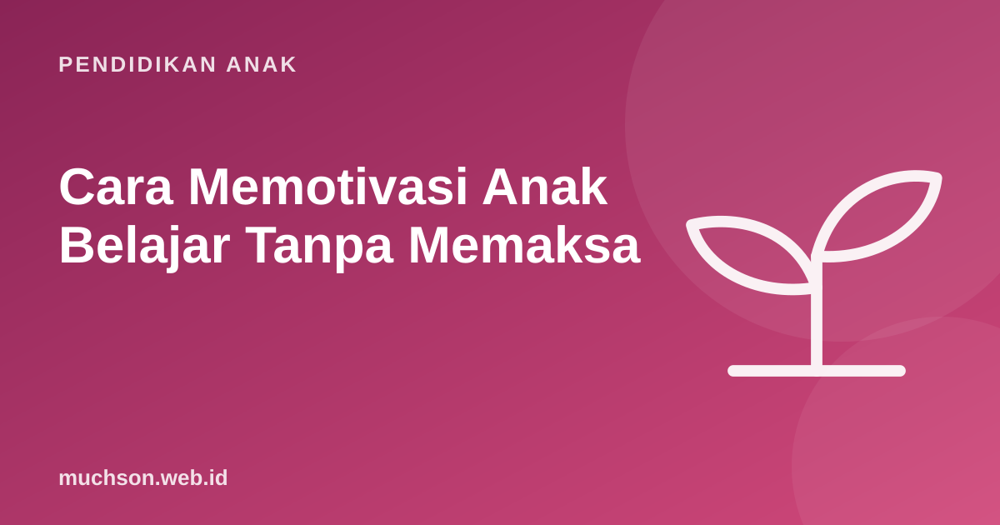

Beranda › Artikel › Pendidikan Anak
Pendidikan AnakCara Memotivasi Anak Belajar Tanpa Memaksa
"Kalau nilaimu bagus, nanti dibelikan mainan." "Kalau tidak belajar, HP disita." Hampir semua orang tua pernah memakai cara ini, dan sering berhasil sebentar. Masalahnya, begitu hadiah atau ancaman hilang, semangat belajarnya ikut hilang. Psikologi motivasi menawarkan cara yang lebih tahan lama.

Dua jenis motivasi
Motivasi ekstrinsik tidak selalu buruk. Gaji memotivasi orang dewasa bekerja. Namun untuk belajar, penelitian menunjukkan pentingnya menjaga agar motivasi dari dalam tidak tergerus.
Saat hadiah justru merugikan
Meta-analisis Deci, Koestner, dan Ryan (1999) di Psychological Bulletin merangkum 128 eksperimen. Temuannya: hadiah nyata yang dijanjikan sebelumnya untuk mengerjakan kegiatan yang sebenarnya sudah menarik cenderung menurunkan motivasi intrinsik. Anak yang tadinya menggambar karena senang, setelah diberi hadiah untuk menggambar, bisa kehilangan minat saat hadiahnya berhenti. Sebaliknya, umpan balik positif yang tulus (pujian yang informatif) cenderung meningkatkan motivasi intrinsik.
| Jenis penghargaan | Efek pada motivasi intrinsik |
|---|---|
| Hadiah barang yang dijanjikan untuk kegiatan yang sudah disukai | Cenderung menurunkan |
| Pujian tulus yang menyebut apa yang dilakukan dengan baik | Cenderung meningkatkan |
| Hadiah kejutan yang tidak dijanjikan | Umumnya tidak merugikan |
| Ancaman dan hukuman | Cenderung menurunkan, menambah tekanan |
Tiga kebutuhan dasar menurut Self-Determination Theory
Edward Deci dan Richard Ryan mengembangkan Self-Determination Theory, yang menyatakan motivasi intrinsik tumbuh ketika tiga kebutuhan psikologis terpenuhi:
1. Otonomi: beri pilihan
Anak yang punya kendali lebih bersemangat. Pilihannya tidak harus besar: "Mau mengerjakan PR Matematika atau Bahasa dulu?", "Mau belajar di meja atau di lantai?", "Proyek tentang hewan apa yang mau kamu buat?" Pilihan dalam batas yang Anda tetapkan tetap memberi rasa memiliki.
2. Kompetensi: tantangan yang pas
Anak termotivasi saat merasa mampu dan berkembang. Tugas yang terlalu mudah membosankan; terlalu sulit membuat putus asa. Pecah tugas, rayakan kemajuan kecil, dan tunjukkan perkembangannya: "Bulan lalu kamu butuh 20 menit, sekarang 12 menit."
3. Keterhubungan: belajar bersama
Anak lebih semangat bila merasa didukung orang yang ia sayangi. Duduk menemani tanpa mengambil alih, menunjukkan minat pada apa yang ia pelajari, dan memberi kesempatan anak mengajari Anda, semuanya memperkuat keterhubungan.
Cek suasana belajar di rumah
Kalau tetap ingin memakai hadiah
- Untuk kegiatan yang membosankan tapi perlu, misalnya menghafal perkalian, sistem poin bisa membantu memulai. Hentikan bertahap setelah kebiasaan terbentuk.
- Hadiahkan pengalaman, bukan barang: memilih menu makan malam, jalan-jalan ke perpustakaan, waktu bermain bersama.
- Hindari membayar untuk hal yang sudah disukai, seperti membaca buku favorit.
- Rayakan proses: "Kamu konsisten belajar 5 hari minggu ini" lebih baik daripada "nilai 100 dapat hadiah".
Minat sering lahir dari rasa mampu. Anak jarang "suka matematika" sebelum merasa bisa matematika. Jadi kalau anak belum termotivasi, fokuslah membangun pengalaman berhasil yang kecil-kecil.
Cari jalan masuk lewat minat
Anak yang "malas belajar" sering sangat bersemangat pada hal lain: game, binatang, sepak bola, menggambar. Gunakan minat itu sebagai jembatan. Anak yang suka game bisa belajar logika dan matematika lewat membuat game sendiri. Coba bersama anak lewat dua pelajaran gratis PixelKode, lalu perhatikan apakah ia ingin melanjutkan tanpa disuruh. Itu tanda motivasi dari dalam.
Tanya jawab
Bagaimana memotivasi anak yang malas belajar?
Apakah memberi hadiah untuk belajar itu salah?
Apa itu motivasi intrinsik?
Kenapa ancaman tidak efektif jangka panjang?
Sumber dan bacaan lanjut
- Deci, E. L., Koestner, R., & Ryan, R. M. (1999). A meta-analytic review of experiments examining the effects of extrinsic rewards on intrinsic motivation. Psychological Bulletin
- Ryan, R. M., & Deci, E. L. (2000). Self-determination theory and the facilitation of intrinsic motivation. American Psychologist
- Center for Self-Determination Theory